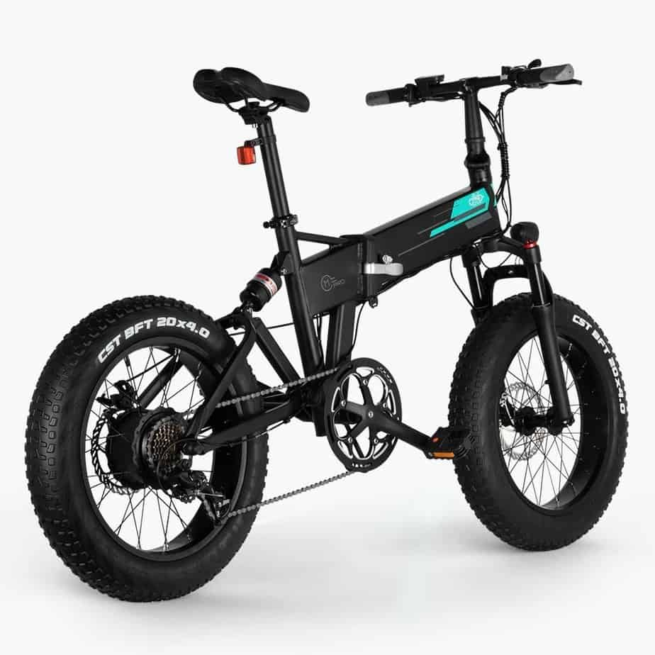

Fiido Electric Bikes Review – Are Fiido eBikes Any Good?
Fiido ebikes are being hyped by a lot of the electric bike crowd on the internet these days. But are Fiido bikes really any good?…

Fiido ebikes are being hyped by a lot of the electric bike crowd on the internet these days. But are Fiido bikes really any good? I decided to find out for myself.
Fiido make an array of electric bikes and electric scooters that are stylish, futuristic, and urban. Their ebike range includes eMountain bikes, electric utility bikes, and folding ebikes.
Fiido ebikes are distinguishable by their small wheel sizes, which make them inappropriate for a lot of things. However, for city living, short-distance commuting, and going on the train, Fiido ebikes are an interesting option.
Fiido eBike Models Review
Fiido X Folding Electric Bike
[As seen in picture above]
Currently the flagship model, the Fiido X combines a trendy, slick design with top-of-the-range technology.
In particular, the Fiido X folding ebike features a torque sensor rather than the traditional cadence sensor.
This makes riding the Fiido X feel more smooth and more natural because, unlike with other ebike, there is no throttle. The torque sensor measures how hard you are pedalling and smoothly adjusts the amount of power being added by the motor.
In addition, because there is no throttle you need not worry about whether this bike complies with the law regarding throttles in your region.
While the Fiido X is small, the distance it can travel is not. The new Fiido X electric bike can achieve up to 130km (80 miles) on a single charge. For use in the city, the Fiido X battery offers more than enough charge. It takes 7 hours to charge the battery fully.
The frame is made from magnesium alloy and looks rather incredible while also being strong and light.
With a Shimano gear system, hydraulic brakes, and a brushless geared motor, the Fiido X is a high-quality electric bike that will get you to work and back with ease. And since it’s foldable, you’ll be able to take the Fiido X on the train without any additional costs in most places.
Ideal for: Young professionals, creatives,
Fiido M1 Fat Tire Folding Electric Bike

Fat tire electric bikes are an all-terrain innovation that have captured the imagination of a generation of ebike riders. You’ll see fat tire ebikes everywhere in major cities these days and in many national parks.
The fat tires make for smooth riding where ever you are, but it’s not until you get off-road, or encounter some adverse weather that you’ll really appreciate the benefits of a fat tire ebike.
The Fiido M1 fat tire folding ebike is a unique take on the traditional fat tire ebike models. The stylish, heavy-duty design ensures this ebike will turn heads.
The Fiido M1 combines emountain bike (eMBT) with urban folding ebike. The end result: a bike you can take anywhere. The Fiido M1 can take on the rough terrain of a mountain track and be packed neatly into the back of your car or taken on the train. It is incredibly versatile.
What’s more, it’s electric! The Fiido M1 has a high-torque 48V battery that ensures fast acceleration and a maximum range of 130km (80miles) on a single charge. The battery does require 9hrs to charge, so don’t forget to plug it in as soon as you get home.
The top speed of the Fiido M1 is an impressive 40km per hour (24.8mph). And with a seven-speed derailleur, you’ll be whizzing over pretty much any terrain.
The 20-inch tires are 4 inches wide with deep, anti-skid tread that will give you grip and stability in sand, snow, puddles, and on rock.
As with any eMBT, the Fiido M1 has front and back shock absorbers, making it possible to traverse the roughest terrain in comfort and without damaging the ebike’s frame.
Ideal for: the all-terrain adventurer, the weekend-explorer
Conclusion
For some situations, the Fiido electric bikes are a great choice. Fiido ebikes combine unique, stylish designs with decent electric and mechanical components.
For use in the city, for commuting, for travelling with your bike on the train, Fiido ebikes are a decent choice.
Fiido Electric Bikes FAQ
How much do Fiido Electric Bikes Cost?
The Fiido M1 fat tire electric bike costs $1,299 (€1,275 | £1,079).
The Fiido X folding electric bike costs $1,7999 (€1,766 | £1,495)
How fast does a Fiido electric bike go?
Fiido electric bikes can go up to 40km per hour (24.8mph). The bike can go faster than this but after hitting the top speed the electric motor will stop assisting you.
Electric bikes don’t normally go over the 25mph mark due to legal restrictions. Ebikes that can go faster than 25mph are often considered pedelecs rather than ebikes and in some places different rules apply to pedelecs.
How fast does a D4 Fiido go?
The Fiido D4 can go up to 25km/h.